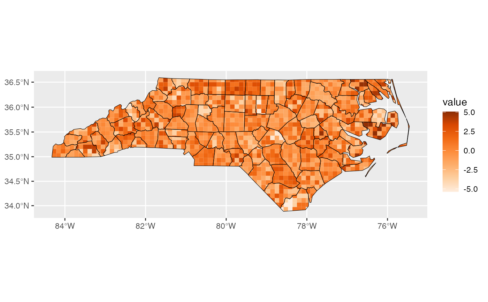

geom_sf_pixel() generates a pixel map layer on areal sf data. Each region
is tessellated into small pixels, with pixel colours mapped from values
sampled from a specified distribution.
Usage
StatPixel
geom_sf_pixel(
mapping = NULL,
data = NULL,
n = 60,
distribution = "uniform",
seed = NULL,
pixel_shape = "hex",
flat_topped = FALSE,
show.legend = NA,
inherit.aes = TRUE,
...
)Arguments
- mapping
Set of aesthetic mappings created by
aes(). If specified andinherit.aes = TRUE(the default), it is combined with the default mapping at the top level of the plot. You must supplymappingif there is no plot mapping.- data
The data to be displayed in this layer. There are three options:
If
NULL, the default, the data is inherited from the plot data as specified in the call toggplot().A
data.frame, or other object, will override the plot data. All objects will be fortified to produce a data frame. Seefortify()for which variables will be created.A
functionwill be called with a single argument, the plot data. The return value must be adata.frame, and will be used as the layer data. Afunctioncan be created from aformula(e.g.~ head(.x, 10)).- n
integer of length 1 or 2, number of grid cells in x and y direction (columns, rows)
- distribution
Distribution used to sample pixel values within each region. Currently supports
"uniform"(the default) and"normal".- seed
Integer seed used for reproducible sampling.
- pixel_shape
Shape of the generated pixels. One of
"hex"(the default),"square", or"rect"."rect"is when dividing the x and y ranges into the same number of intervals, so cells may be rectangular.- flat_topped
logical; if
TRUEgenerate flat topped hexagons, else generate pointy topped- show.legend
logical. Should this layer be included in the legends?
NA, the default, includes if any aesthetics are mapped.FALSEnever includes, andTRUEalways includes.You can also set this to one of "polygon", "line", and "point" to override the default legend.
- inherit.aes
If
FALSE, overrides the default aesthetics, rather than combining with them. This is most useful for helper functions that define both data and aesthetics and shouldn't inherit behaviour from the default plot specification, e.g.annotation_borders().- ...
Other arguments passed on to
layer()'sparamsargument. These arguments broadly fall into one of 4 categories below. Notably, further arguments to thepositionargument, or aesthetics that are required can not be passed through.... Unknown arguments that are not part of the 4 categories below are ignored.Static aesthetics that are not mapped to a scale, but are at a fixed value and apply to the layer as a whole. For example,
colour = "red"orlinewidth = 3. The geom's documentation has an Aesthetics section that lists the available options. The 'required' aesthetics cannot be passed on to theparams. Please note that while passing unmapped aesthetics as vectors is technically possible, the order and required length is not guaranteed to be parallel to the input data.When constructing a layer using a
stat_*()function, the...argument can be used to pass on parameters to thegeompart of the layer. An example of this isstat_density(geom = "area", outline.type = "both"). The geom's documentation lists which parameters it can accept.Inversely, when constructing a layer using a
geom_*()function, the...argument can be used to pass on parameters to thestatpart of the layer. An example of this isgeom_area(stat = "density", adjust = 0.5). The stat's documentation lists which parameters it can accept.The
key_glyphargument oflayer()may also be passed on through.... This can be one of the functions described as key glyphs, to change the display of the layer in the legend.
Details
Mappings in geom_sf_pixel() is also supplied with duo_pixel() inside
aes(), which automatically dispatches an scale.
Since sf::st_intersection() is used internally, operating directly on
geographic (s2) sf objects can be slow, especially when a large number of
pixels are generated. Projecting data to a planar coordinate system in
advance is recommended.
Examples
# Transform sf data into a planar crs for faster geometric intersection
nc_flat <- sf::st_transform(nc, sf::st_crs(3857))
# Basic pixel map
ggplot(nc_flat, aes(fill = duo_pixel(value, sd))) +
geom_sf_pixel(n = 40)
# Control pixel shape and resolution
ggplot(nc_flat, aes(fill = duo_pixel(value, sd))) +
geom_sf_pixel(n = 30, pixel_shape = "square")
